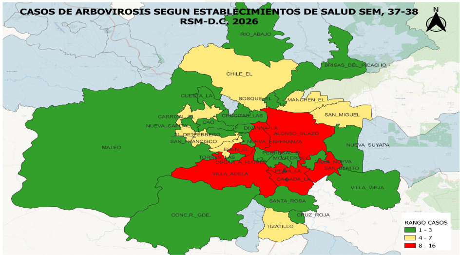
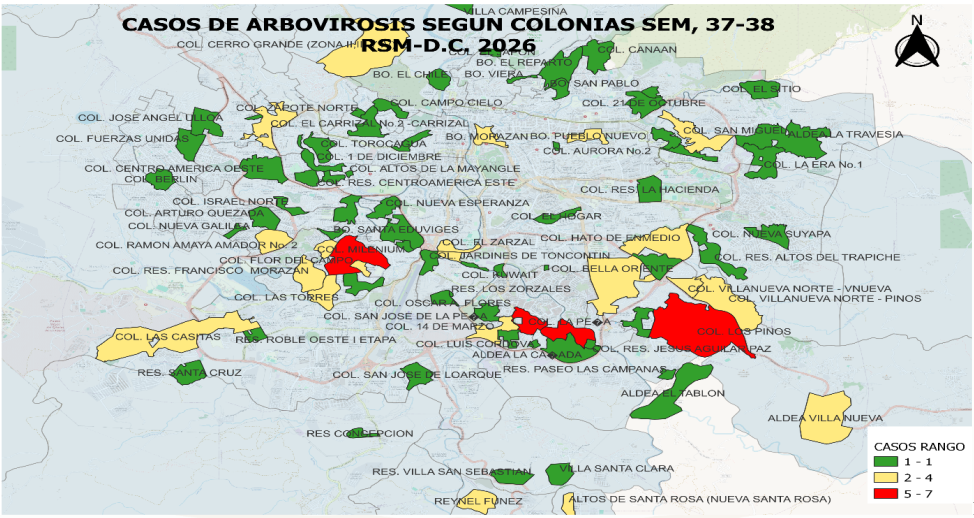

Región Sanitaria Metropolitana del Distrito Central · Licda. Bessy Solano / Técnico UVS-RSM-DC


Los mapas de las semanas 37-38 reflejan una mayor concentración de casos (rango de 8 a 16 casos) en las zonas urbanas del Distrito Central, específicamente en áreas como Ciudad Nueva, El Carrizal, La Cuesta, y zonas aledañas al Centro. Las zonas periféricas como Mateo, Nueva Armenia y San Buenaventura mantienen rangos de 1 a 3 casos.
Fuente: Boletín de notificación de alerta CIS/UAPS Clíper y hospitales. RSM-DC
Durante la SE 41 de 2026 se registraron 133 casos de arbovirosis, mientras tanto Zika y Chikungunya se mantuvieron en cero. En lo que va del año se acumula un total de 2,438 casos. En esta cifra se incluyen únicamente dos casos de Zika y dos casos de Chikungunya, los cuales se detectaron en la SE 15 y 37.
Se reportan 133 casos con y sin signos de alarma y cero casos de dengue grave, durante la semana epidemiológica 41 del año 2026, la línea es ascendente y se mantiene en zona de seguridad.
De la semana epidemiológica 1 a la 41 se contabiliza un total de (n=9) casos de dengue grave con cero fallecimientos, para el 2025 a la semana 41 (n=0) caso de dengue grave.
En la SE 41 se notifica un total de 45 casos de neumonía, acumulando un total de 2,407 en las primeras 41 semanas del año 2026 en la RSMDC. La línea es descendente y se ubica en zona de éxito según el corredor endémico histórico (2020-2026).
De la semana epidemiológica 1 a la 41 del año 2026 se contabilizan un total de 830 casos acumulados de varicela y para el año 2025, en un total de 1,655, comparación al año con una disminución de 825 casos comprados a la misma semana del año anterior.
Durante la SE 41 del año 2026 se reporta un total de 570 casos de diarrea, se observa una disminución en la última semana epidemiológica de 109 casos a la misma semana del año anterior, posicionándose en zona de éxito.
Durante la semana 41 se reportaron un total 4 casos de disentería con una comparativa de 9 casos al año anterior, mostrando un descenso y colocándonos en zona de éxito.
A la semana epidemiológica 41 se reporta 3 casos de hepatitis (todas sus clasificaciones) a expensas de los hospitales con un leve aumento en comparación a la misma semana epidemiológica del año anterior.
Durante la semana epidemiológica 41 de 2026 se reportó (n=3) caso de rotavirus tras ingreso hospitalario por diarrea o síndrome gastroenterico, con (n=0) casos registrados en el mismo periodo de 2025. El año 2026 alcanza un acumulado de 122 casos sospechosos atendidos, de los cuales solo 18 han sido confirmados como positivos.
Hasta la semana 1-41 del año 2026, se contabiliza un total de 39 casos sospechosos de Sarampión, en comparación al año anterior que, para la misma semana, se contabilizaban un total de 30 casos. Cabe destacar que, a la fecha, ninguno de los casos reportados ha sido confirmado como positivo.
Hasta la semana epidemiológica 1-41 se notifica un total de 43 casos sospechosos de parotiditis acumulados año 2026 y para el año anterior 2025 a la misma semana un total acumulados de 38 casos, observando un comportamiento similar al año anterior con muy pocas variaciones.
A la SE # 41 del año 2026 se notifica (n=120) defunciones en menores de un año en comparación al año 2025 con (n=110) con un aumento del 9% para el año 2026.
En la S.E 1-52 del año 2025 se reportan 5 Muertes Maternas. En el año 2026 hasta SE 41 se reportan 4 Muertes Maternas. La Razón de Mortalidad Materna para el año 2026 es de 8.8 por cada 100,000 NV, y la Tasa de Mortalidad Materna es de 0.59 para este mismo año.
La comparación hasta la S.E. 41 muestra una tendencia descendente en las defunciones de menores de 5 años, pasando de 116 casos en 2023 a 81 en 2024, 78 en 2025 y en 2026. En el período analizado se observa una reducción de 40 defunciones, equivalente al 34%.
Hasta la Semana Epidemiológica 41 año 2026, se han confirmado 78 casos de miasis a causa de GBG. Hasta la Semana Epidemiológica 53 Año 2025, se confirmaron 51 casos de miasis por GBG y 11 casos de miasis por otras especies.
Hasta la SE 41 del año 2026, se han reportado 52 casos para Chagas en fase crónica en el Distrito Central, para la misma SE del año 2025 se reportó un acumulado de 35 casos para la enfermedad de Chagas.
Hasta la Semana Epidemiológica No.41 Año 2026, se reportan (n=0) casos para Leptospirosis y (n=0) casos de Malaria (Plasmodium vivax y falciparum) en el Distrito Central. No se reportan defunciones.
Para la semana epidemiológica 41 se notifican un total de 62 casos de mordeduras de animal trasmisor de rabia siendo la mayoría producida por caninos, acumulando en lo que va del año 2026 2,238 casos, para el año 2025 a la misma semana un acumulado de 2,448. Cero positividades de rabia en casos sospechosos en humanos y animales.
De la semana epidemiológica 1 a la 41 del año 2026 se notifican un total acumulado de 14 mordeduras de serpiente con una leve disminución de 15 casos menos que el año anterior.
Para la semana epidemiológica 41 se notifican un total de 70 casos nuevos de conjuntivitis, siendo un total acumulado de la semana 1 a 41 de 5,443 casos para el año 2026 y un total acumulado de 7,674 para el año 2025, teniendo una disminución del 29% (2,231 casos menos).
De la semana epidemiológica 1 a la 41 se acumula un total de 19 intoxicaciones por plaguicidas, siendo estas notificadas por el segundo nivel de atención provenientes de áreas rurales del Distrito Central.
| Forma | 2025 | 2026 |
|---|---|---|
| Pulmonar | 124 | 103 |
| Extrapulmonar | 46 | 40 |
| Total | 170 | 143 |
La comparación acumulada reporta 170 casos de tuberculosis en 2025 y 143 en 2026, lo que equivale a 27 casos menos y a una reducción relativa del 15.9%. La tuberculosis pulmonar continúa siendo la forma predominante.
| Año | Casos | Comparativa |
|---|---|---|
| 2025 | 22 | 38% del total |
| 2026 | 58 | 62% del total |
| Total | 80 | Aumento de 24 casos |
Se observa un incremento sostenido en los casos positivos de sífilis materna con 62% (aumentó 24 casos) para el año 2026. La tendencia lineal ascendente evidencia una mayor transmisión o detección de la infección en mujeres embarazadas, alcanzando su punto máximo en agosto con 9 casos.
Durante enero-agosto de 2026 se observa un incremento de casos del 26% respecto al mismo período de 2025, pasando de 114 a 144 casos. El aumento fue especialmente marcado en mayo, con un incremento de 188.9% (de 9 a 26 casos), seguido de junio con 35.3% (17 a 23) y julio con 23.5% (17 a 21).
Según condición clínica al momento del diagnóstico, predominaron ampliamente los casos asintomáticos (97 casos en 2025 y 118 en 2026, incremento del 22%). Los casos clasificados como infección avanzada aumentaron de 14 en 2025 a 22 en 2026 (incremento del 57%), mientras que en 2026 se registraron 2 casos de SIDA.
| Causa de Morbilidad | Casos |
|---|---|
| Síndrome Gastroentérico | 111 |
| Neumonía Adquirida en la Comunidad | 70 |
| Diarrea | 62 |
| Neumonía Adquirida en la Comunidad (2) | 58 |
| Neumonía | 52 |
| NAC | 47 |
| Sospecha Dengue con Signos de Alarma | 40 |
| Síndrome Gastroentérico (2) | 37 |
| Neumonía Viral | 34 |
| Diarrea Aguda | 24 |
| Diagnóstico | Casos |
|---|---|
| Indeterminado | 68 |
| Choque Séptico | 44 |
| HTA | 36 |
| Neumonía | 35 |
| DMT2 | 27 |
| HPAF | 25 |
| Hipertensión Arterial | 20 |
| Choque Cardiogénico | 20 |
| Politraumatismo | 18 |
| Caída del mismo plano | 17 |
| Diabetes Mellitus Tipo II | 16 |
La semana 41 notifica 45 casos, acumulando 2,407. La línea de tendencia es descendente y se ubica en la Zona de Éxito del corredor endémico histórico (2020-2026), lo que indica un comportamiento por debajo de lo esperado.
Se reportan 570 casos en la semana 41. Se observa una disminución de 109 casos en comparación con la misma semana del año anterior, posicionándose en la Zona de Éxito. El corredor muestra picos históricos en las primeras semanas del año, pero la tendencia actual es favorable.
De la semana 1 a la 41, el índice de positividad de ovitrampas mostró un aumento significativo entre las semanas 25 y 29, alcanzando niveles de hasta 40. Este incremento se atribuye a la temporada de lluvias aisladas que cruza el Distrito Central, lo que aumenta la reproducción del vector.